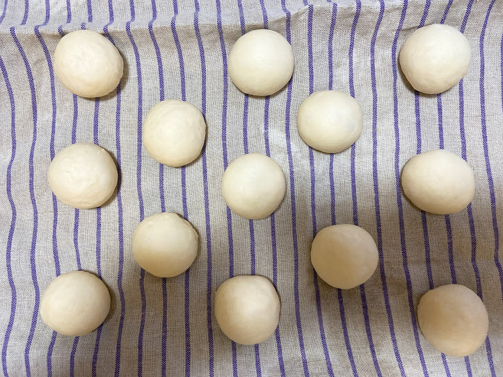
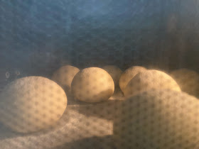
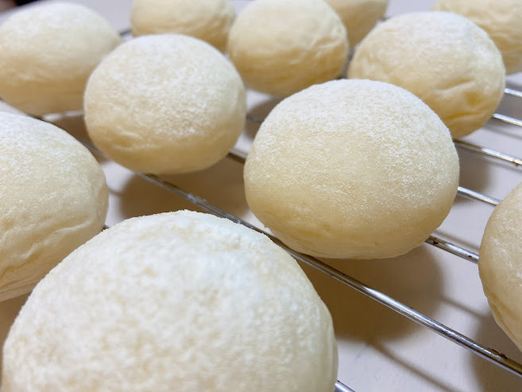
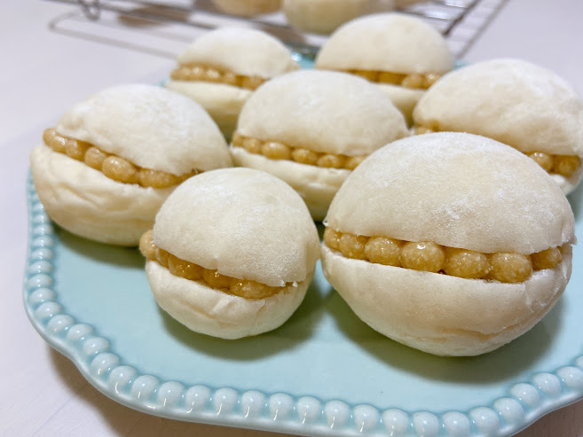
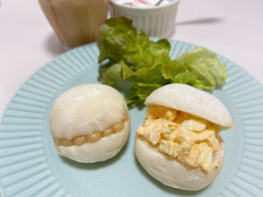
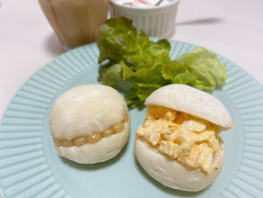

白パン
コロンとしたフォルムがかわいい白パン。
シンプルだけどふんわりもちっと食感がおいしさのポイント◎
自家製カシューナッツバターで可愛くおめかしパンに。
シンプルだけどふんわりもちっと食感がおいしさのポイント◎
自家製カシューナッツバターで可愛くおめかしパンに。
▽フォトギャラリー△

〜 丸め 〜

〜 焼成中 〜

〜 焼き上がり 〜

〜 カシューナッツバターサンド 〜
▽材料△
| 材料 | 分量(g) |
|---|---|
| 強力粉 | 200 |
| 砂糖 | 12 |
| 塩 | 2.8 |
| 牛乳 | 60 |
| バター | 11 |
| ドライイースト | 2.5 |
| 水 | 70 |
▽アレンジ△

〜 アレンジサンド 〜
定番おいしい卵サンドにアレンジ
何を挟んでも相性バッチリ。
次回はあんバターかあんクリチもしたいなぁ。。。

〜 アレンジサンド 〜
定番おいしい卵サンドにアレンジ
何を挟んでも相性バッチリ。
次回はあんバターかあんクリチもしたいなぁ。。。
何を挟んでも相性バッチリ。
次回はあんバターかあんクリチもしたいなぁ。。。